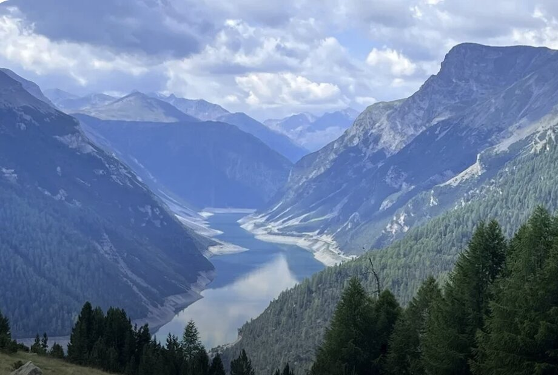
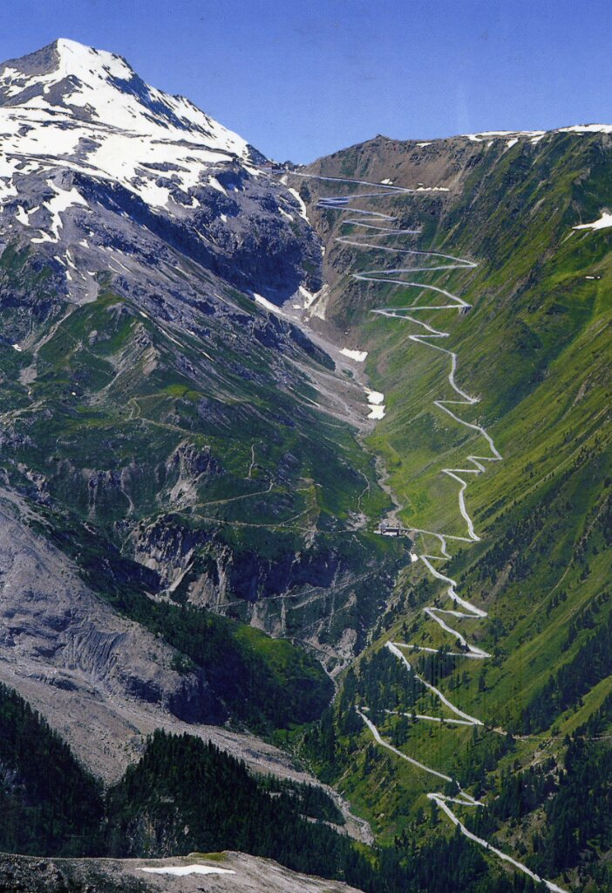

Welcome to ASIC 2027
The 27th Annual Summer Interdisciplinary Conference, held at Hotel Residence 3-Signori in Santa Caterina di Valfurva, a twenty-minute drive from Bormio, Italy.

The conference will have talks every afternoon and evening on the six consecutive days August 2 (Monday) through August 7 (Saturday), 2027 — the last talks are held on the evening of August 7, so plan to depart no earlier than August 8.
Hotel website: 3signori.it. This is an excellent hotel with the facilities ASIC attendees have come to expect. The meetings, catered breaks, and breakfasts and dinners will all be held at the hotel — see the Lodging tab for reservation details.
Bormio & the Stelvio Pass
Bormio is a city famous for its proximity to the Stelvio Pass (Passo dello Stelvio) — Italy's highest paved mountain pass at 2,757 meters (9,045 ft), famous for its use in the Giro d'Italia, with 48 dramatic hairpin turns rising about 1,500 meters on each side.

Conference subject matter
The subject matter of the ASIC conferences is interdisciplinary, with a primary emphasis on a wide variety of scientific domains within the broad frame of Cognitive Science. ASIC uses the very successful format of previous ASIC conferences: days are free for leisure activities and discussions among participants. The talks are in the later afternoon/early evening, followed by dinner. The dates have been chosen to make it convenient for attendees to bring family and friends.
Invitation
The conference is open to all interested parties and their family and friends. An invitation is NOT needed to attend. It will be of particular interest to scholars who fit the very general theme of the conference — we encourage you to send the conference information to friends and colleagues.
Conference aims
The conference is truly interdisciplinary and welcomes interesting talks aimed at a general audience on any subject, but most talks have ranged across a variety of subjects in cognitive science, including:
- Modeling of cognition
- Neuroscience, cognitive neuroscience
- Psychology (perception, psychophysics, attention, information processing, memory and cognition)
- Computer science and artificial intelligence
- Machine intelligence and learning
- Methodology and statistics
- Linguistics, psycholinguistics and computational linguistics
- Philosophy of mind and cognitive science
Experience has shown that the talks most appreciated are on subjects unfamiliar to most participants, so this list is not meant to discourage those carrying out quite different types of research. We often have talks emphasizing theory, mathematical modeling, and computational modeling (including neural networks and artificial intelligence) — even such talks must be comprehensible and interesting to a wide scientific audience.
Conference format
There is a single speaking session each day (no posters), intentionally organized to maximize the dissimilarity of each day's presentations. The talks are 30 minutes each, limiting the total to 48 over the six days; if too many attendees wish to speak, the organizer will select who gives talks. See the Talk Submissions tab for how to propose a talk.
The conference starts with registration and a reception with drinks and food from about 15:30–16:00 on Monday, August 2. On subsequent days there are drinks and light snacks from about 15:30–16:00, followed by a session of spoken presentations that typically ends around 20:00. The last evening of talks is Saturday, August 7, so plan to depart no earlier than Sunday, August 8.
This format frees most of the day for discussions with colleagues or other activities with colleagues, family, and friends. Day trips are possible, provided you return in time for the 16:00 session — travel that wouldn't allow a return by then should be arranged for the days before or after the conference.
Talk Submissions
Information on submitting a proposal for a talk at ASIC 2027.
There is a single speaking session each day (no posters), intentionally organized to maximize the dissimilarity of each day's presentations. Submit your talk information — authors (with the presenter indicated), affiliations and emails, a title, and an abstract — as early as possible; this information can be changed, replaced, or removed at any time up to July 1, 2027.
You are not officially on the list to present a talk until you have both submitted your talk information here and completed registration with the fee — see the Registration tab.
Registration
You are not officially on the list for presenting research or a talk until you register and send the registration fee.
If you'd like to be added to the ASIC 2027 email list for announcements as soon as registration opens, email the organizer — see the Contact tab.
Lodging
A block of rooms is presently being held at Hotel Residence 3-Signori, Santa Caterina di Valfurva — but the block is limited at the negotiated price, so reserve soon.
Unreserved rooms will be returned to the general public as the date approaches. Hotel website: 3signori.it.
Activities
The area around Santa Caterina di Valfurva and Bormio is quite scenic, with every sort of adventure activity and sightseeing.
The location is ideal for summer activities, including hiking, biking, mountain biking, climbing, mountaineering, via ferrata, parasailing, canyoning, rafting, and all the usual ASIC outdoor adventures.
Stelvio Pass
A short drive from Santa Caterina is the Stelvio Pass (Passo dello Stelvio) — Italy's highest paved mountain pass at 2,757 m (9,045 ft), well known from the Giro d'Italia for its 48 hairpin turns. It's a popular destination for road cyclists and drivers alike, and a dramatic day trip even if you're neither.
Contact
Email is preferred for all correspondence.
Conference organizer
Richard M. Shiffrin
Indiana University – Bloomington
shiffrin@iu.edu
Associate organizers
- Stephan Lewandowsky, University of Bristol — Stephan.Lewandowsky@bristol.ac.uk
- Fritz Breithaupt, Indiana University — fbreitha@indiana.edu
- Jennifer Trueblood, Indiana University — jstruebl@iu.edu
- Colin Allen, University of California Santa Barbara — prof.colin.allen@gmail.com
- Franco Pestilli, University of Texas — pestilli@utexas.edu
Postal address
Annual Summer Interdisciplinary Conference (ASIC 2027)
c/o Prof. Richard Shiffrin, Psychological and Brain Sciences Department
Indiana University, 1101 E. 10th St., Bloomington, IN 47405